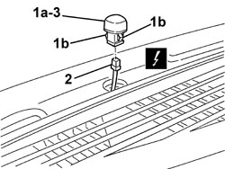

5010D56 SOLAR SENSOR - R.R FOLLOWING ELECTRICAL SYSTEM CHECK
- Path
- Procedures > 50 AUXILIARY UNITS > 5010 CLIMATE CONTROL - MISCELLANEOUS > 5010D AIR TEMPERATURE RECORDING SYSTEM > 5010D56 SOLAR SENSOR - R.R FOLLOWING ELECTRICAL SYSTEM CHECK
- Kind
- repair procedure (removal / refitting; the operation number is the code)
- Applies to
- all engines; all production periods
- Interactive page
- https://sloeber94.github.io/elrnDB-aBrrSpdr/en/#/946002259
Applies to: all engines; all production periods
 Removing
Removing
 Refitting
Refitting1. Lift up the sensor (1a) releasing the retainers (1b).
2. Disconnect the electrical connection.
Description | Component |
|---|---|
SOLAR SENSOR |
3. Keep the sensor.

Applies to: all engines; all production periods
Refitting
Removing- Check that the sensor is not damaged.
- Connect the electrical connection.
- Place the sensor in position and attach the retainers.
Topics linked from this page (1)
Topics that link to this page (24)
- L010 CLIMATE CONTROL NOT COOLING
- L012 CLIMATE CONTROL DOES NOT COOL TO THE DESIRED TEMPERATURE
- L020 PASSENGER SIDE TEMPERATURE ADJUSTMENT DOES NOT WORK
- 1820B21 MASTER CYLINDER (PUMP) - R R FOR RIGHT HAND DRIVE VERSIONS
- 3330B02 PEDAL ASSEMBLY - R.R
- 3330B23 BRAKE PEDAL - R.R. FOR RIGHT HAND DRIVE VERSIONS
- 3330B27 CLUTCH PEDAL - R.R. FOR RIGHT HAND DRIVE VERSIONS
- 3330B42 PEDAL UNIT SUPPORT - R.R. FOR RIGHT HAND DRIVE VERSIONS
- 3330D18 BRAKE SERVO R R FOR RIGHT HAND DRRIVE VERSIONS
- 5010B24 UNDER-FACIA AIR DUCTS - R.R.
- 5040C10 AIR CONDITIONING CASING - R.R
- 5040C50 AIR CONDITIONING HEATER RADIATOR - R.R.
- 5040C64 A/C EVAPORATOR - R+R
- 5040D80 AIR CONDITIONING SYSTEM CABLE LOOM - R.R. OR REPLACE
- 5040D86 AIR CONDITIONING RIGHT AIR MIXTURE FLAP CONTROL MOTOR - R.R
- 5040D94 AIR CONDITIONING LEFT UPPER AIR DISTRIBUTION FLAP MOTOR (DEFROST) - R.R
- 5040D96 AIR CONDITIONING RIGHT UPPER DISTRIBUTION FLAP MOTOR (DEFROST) - R.R
- 5505C31 BUILT-IN WIRING UNDER DASHBOARD - R.R.
- 5580C22 AIR BAG MODULE - PASSENGER SIDE - R.R
- 5580C24 PASSENGER SIDE AIR BAG MODULE SUPPORT R. R.
- 7040A10 DASHBOARD TRIM - R+R
- 7210A74 R R FACIA SUPPORT BEAM
- E6020 AIR CONDITIONER - WIRING DIAGRAM
- E6020 AIR CONDITIONER - COMPONENT LOCATION